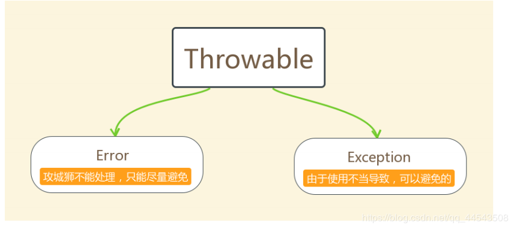
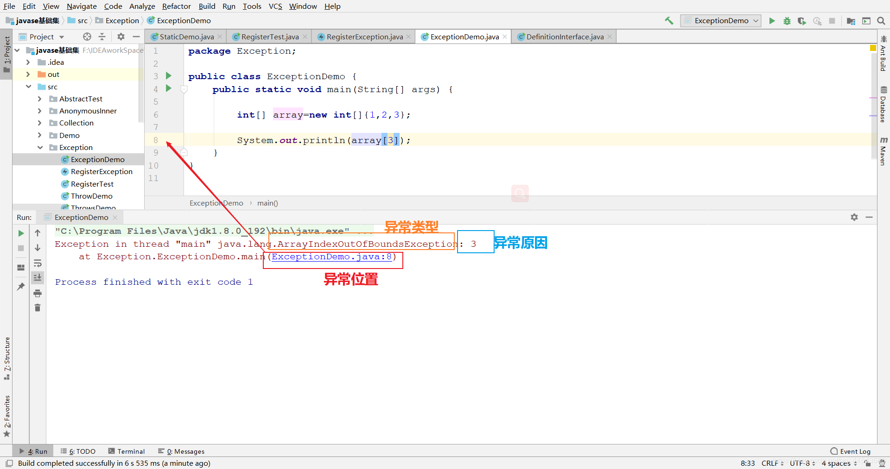
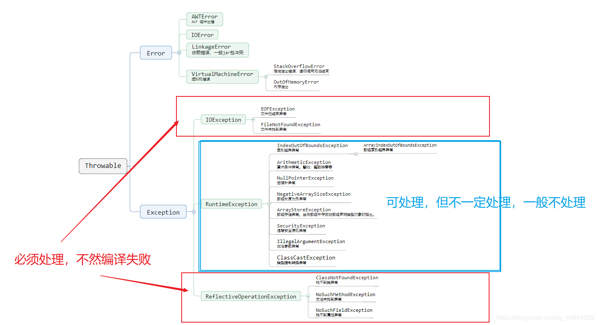
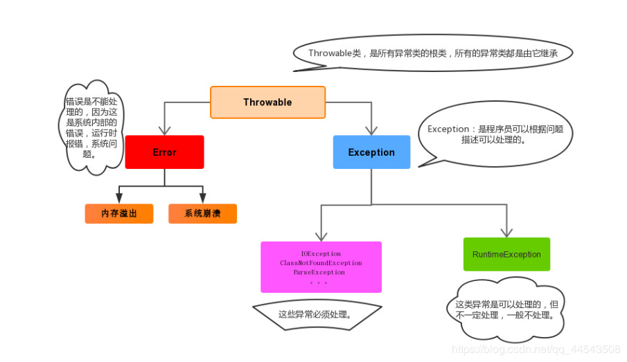
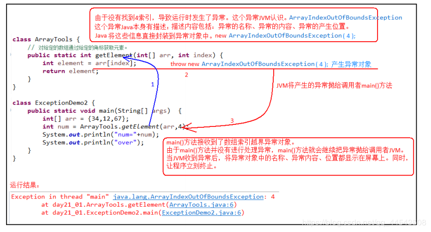
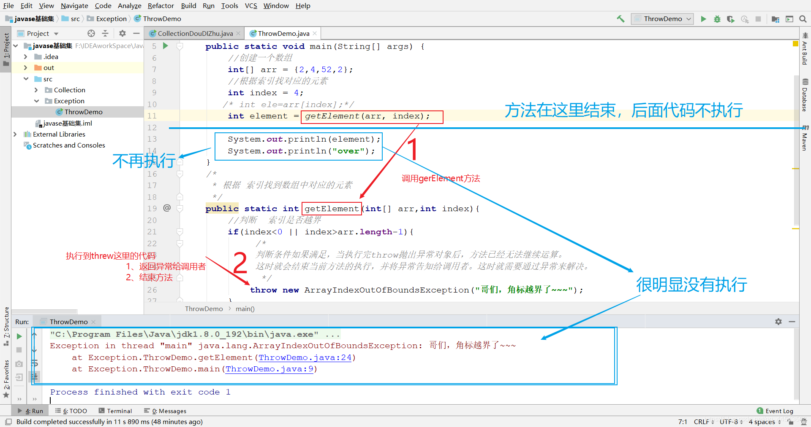
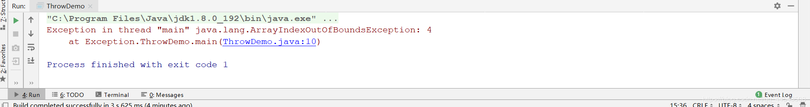
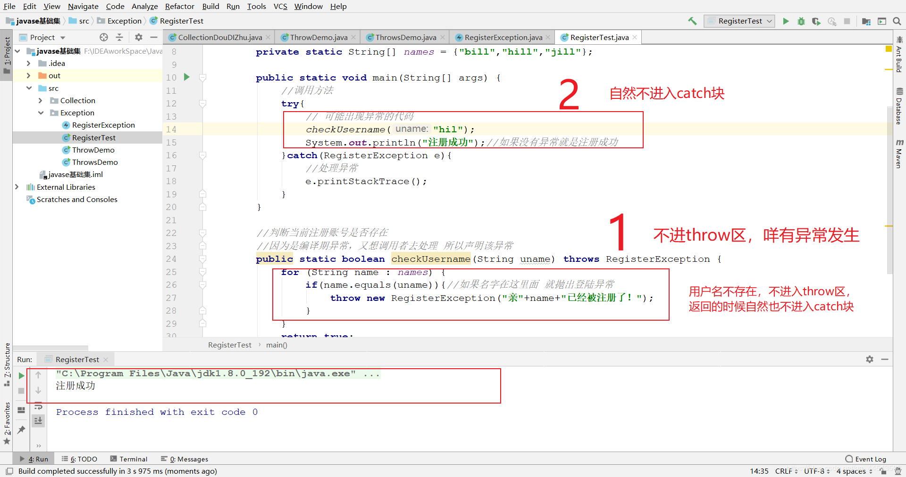
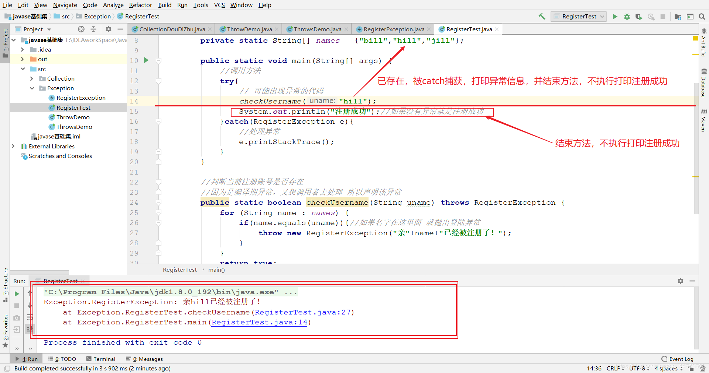

原文连接:https://www.cnblogs.com/yichunguo/p/11796126.html
目录
@
1、异常
1.1 异常概念
异常 ：简单说就是不正常运行，最终导致JVM的非正常停止。
在Java等面向对象的编程语言中，异常本身是一个类，产生异常就是创建异常对象并抛出了一个异常对象。Java处理异常的方式是中断处理。
异常指的并不是语法错误,语法错了,编译不通过,不会产生字节码文件,根本不能运行.
1.2 异常体系
异常机制其实是帮助我们找到程序中的问题，异常的根类是java.lang.Throwable，其下有两个子类：java.lang.Error与java.lang.Exception，平常所说的异常指java.lang.Exception。

Throwable中的常用方法：
1、 public void printStackTrace():打印异常的详细信息。
包含了异常的类型,异常的原因,还包括异常出现的位置,在开发和调试阶段,都得使用printStackTrace。
2、 public String getMessage():获取发生异常的原因。
提示给用户的时候,就提示错误原因。
3、 public String toString():获取异常的类型和异常描述信息(不用)。
出现异常,最简单的方式就是把异常的简单类名,拷贝到API中去查。

1.3 异常分类
我们平常说的异常就是指Exception，因为这类异常一旦出现，我们就要对代码进行更正，修复程序。
异常(Exception)的分类:根据在编译时期还是运行时期去检查异常?
- 编译时期异常:checked异常。在编译时期,就会检查,如果没有处理异常,则编译失败。(如日期格式化异常)
- 运行时期异常:runtime异常。在运行时期,检查异常.在编译时期,运行异常不会编译器检测(不报错)。(如数学异常)


1.4 异常的产生过程解析
先运行下面的程序，程序会产生一个数组索引越界异常ArrayIndexOfBoundsException。我们通过图解来解析下异常产生的过程。
工具类
public class ArrayTools {
// 对给定的数组通过给定的角标获取元素。
public static int getElement(int[] arr, int index) {
int element = arr[index];
return element;
}
}测试类
public class ExceptionDemo {
public static void main(String[] args) {
int[] arr = { 34, 12, 67 };
intnum = ArrayTools.getElement(arr, 4)
System.out.println("num=" + num);
System.out.println("over");
}
}上述程序执行过程图解：

2、 异常的处理
Java异常处理的五个关键字：try、catch、finally、throw、throws
2.1 抛出异常throw
在编写程序时，作为一个优秀的程序员必须要考虑程序出现问题的情况。举个栗子，在定义方法时，方法需要接受参数。那么，当调用方法使用接受到的参数时，首先需要先对参数数据进行合法的判断，数据若不合法，就应该告诉调用者，传递合法的数据进来。这时需要使用抛出异常的方式来告诉调用者。这个时候throw就派上用场了！
在java中，提供了一个throw关键字，Throw用来抛出一个指定的异常对象。从而可以
1、创建一个异常对象。封装一些提示信息(信息可以自己编写)。
2、通过关键字
throw就可以将这个异常对象告知给调用者，还可以将这个异常对象传递到调用者处。
throw小结
throw用在方法内，后面接一个异常对象，使用格式为throw new 异常类名(参数);，将这个异常对象传递到调用者处，并结束当前方法的执行。
throw使用的格式如下：
~~~java
throw new NullPointerException("要访问的arr数组不存在");
throw new ArrayIndexOutOfBoundsException("该索引在数组中不存在，已超出范围");
~~~
使用throw的实例使用：
public class ThrowDemo {
public static void main(String[] args) {
//创建一个数组
int[] arr = {2,4,52,2};
//根据索引找对应的元素
int index = 4;
int element = getElement(arr, index);
System.out.println(element);
System.out.println("over");
}
/*
* 根据 索引找到数组中对应的元素
*/
public static int getElement(int[] arr,int index){
//判断 索引是否越界
if(index<0 || index>arr.length-1){
/*
判断条件如果满足，当执行完throw抛出异常对象后，方法已经无法继续运算。
这时就会结束当前方法的执行，并将异常告知给调用者。这时就需要通过异常来解决。
*/
throw new ArrayIndexOutOfBoundsException("哥们，角标越界了~~~");
}
int element = arr[index];
return element;
}
}throw运行效果分析：

再来看看不使用throw的实例使用的运行：
public static void main(String[] args) {
//创建一个数组
int[] arr = {2,4,52,2};
//根据索引找对应的元素
int index = 4; //注意索引4已经越界了
int ele=arr[index];
System.out.println(ele);
System.out.println("over");
}运行结果

这样一对比throw的优势就不言而喻了~
2.2 Objects非空判断
还记得Objects类吗，曾经提到过它由一些静态的实用方法组成，这些方法是null-save（空指针安全的）或null-tolerant（容忍空指针的），那么在它的源码中，对对象为null的值进行了抛出异常操作。
public static <T> T requireNonNull(T obj):查看指定引用对象不是null。
查看源码发现这里对为null的进行了抛出异常操作：
public static <T> T requireNonNull(T obj) {
if (obj == null)
throw new NullPointerException();
return obj;
}2.3 声明异常throws
如果产生了问题，我们就会
throw将问题描述类即异常进行抛出，也就是将问题返回给该方法的调用者。那么对于调用者来说，该怎么处理呢？一种是进行捕获处理，另一种就是继续讲问题声明出去，使用
throws声明处理。
声明异常：将问题标识出来，报告给调用者。如果方法内通过throw抛出了编译时异常，而没有捕获处理（稍后讲解该方式），那么必须通过throws进行声明，让调用者去处理。
throws小结
关键字throws运用于方法声明之上,throws格式为修饰符 返回值类型 方法名(参数) throws 异常类名1,异常类名2…{ }，用于表示当前方法不处理异常,而是提醒该方法的调用者来处理异常(抛出异常).
声明异常的代码演示：
public class ThrowsDemo {
public static void main(String[] args) throws FileNotFoundException {
read("a.txt");
}
// 如果定义功能时有问题发生需要报告给调用者。可以通过在方法上使用throws关键字进行声明
public static void read(String path) throws FileNotFoundException {
if (!path.equals("a.txt")) {//如果不是 a.txt这个文件
// 我假设 如果不是 a.txt 认为 该文件不存在 是一个错误 也就是异常 throw
throw new FileNotFoundException("文件不存在");
}
}
}throws用于进行异常类的声明，若该方法可能有多种异常情况产生，那么在throws后面可以写多个异常类，用逗号隔开。
public class ThrowsDemo2 {
public static void main(String[] args) throws IOException {
read("a.txt");
}
public static void read(String path)throws FileNotFoundException, IOException {
if (!path.equals("a.txt")) {//如果不是 a.txt这个文件
// 我假设 如果不是 a.txt 认为 该文件不存在 是一个错误 也就是异常 throw
throw new FileNotFoundException("文件不存在");
}
if (!path.equals("b.txt")) {
throw new IOException();
}
}
}throw 和 throws 的区别小结
throw：
1、表示方法内抛出某种异常对象
2、如果异常对象是非 RuntimeException则需要在方法申明时加上该异常的抛出 即需要加上throws语句 或者 在方法体内try catch处理该异常，否则编译报错
3、执行到throw语句则后面的语句块不再执行
throws：
1、方法的定义上使用
throws表示这个方法可能抛出某种异常
2、需要由方法的调用者进行异常处理
2.4 捕获异常try…catch
如果异常出现的话,会立刻终止程序,所以我们得处理异常:
- 该方法不处理,而是声明抛出,由该方法的调用者来处理(
throws)。 - 在方法中使用
try-catch的语句块来处理异常。
try-catch的方式就是捕获异常。
捕获异常：Java中对异常有针对性的语句进行捕获，可以对出现的异常进行指定方式的处理。
捕获异常语法如下：
try{
编写可能会出现异常的代码
}catch(异常类型 e){
处理异常的代码
//记录日志/打印异常信息/继续抛出异常
}try：该代码块中编写可能产生异常的代码。
catch：用来进行某种异常的捕获，实现对捕获到的异常进行处理。
注意:
try和catch都不能单独使用,必须连用。
演示如下：
public class TryCatchDemo {
public static void main(String[] args) {
try {// 当产生异常时，必须有处理方式。要么捕获，要么声明。
read("b.txt");
} catch (FileNotFoundException e) {// 括号中需要定义什么呢？
//try中抛出的是什么异常，在括号中就定义什么异常类型
System.out.println(e);
}
System.out.println("over");
}
/*
*
* 我们 当前的这个方法中 有异常 有编译期异常
*/
public static void read(String path) throws FileNotFoundException {
if (!path.equals("a.txt")) {//如果不是 a.txt这个文件
// 我假设 如果不是 a.txt 认为 该文件不存在 是一个错误 也就是异常 throw
throw new FileNotFoundException("文件不存在");
}
}
}如何获取异常信息：
Throwable类中定义了一些查看方法:
1、 public String getMessage():获取异常的描述信息,原因(提示给用户的时候,就提示错误原因。
2、 public String toString():获取异常的类型和异常描述信息(不用)。
3、 public void printStackTrace():打印异常的跟踪栈信息并输出到控制台。
包含了异常的类型,异常的原因,还包括异常出现的位置,在开发和调试阶段,都得使用printStackTrace。
2.4 finally 代码块
finally：有一些特定的代码无论异常是否发生，都需要执行。另外，因为异常会引发程序跳转，导致有些语句执行不到。而finally就是解决这个问题的，在finally代码块中存放的代码都是一定会被执行的。
什么时候的代码必须最终执行？
当我们在try语句块中打开了一些物理资源(磁盘文件/网络连接/数据库连接等),我们都得在使用完之后,最终关闭打开的资源。
finally的语法:
try...catch....finally:自身需要处理异常,最终还得关闭资源。
注意:
finally不能单独使用。
比如在IO流中，当打开了一个关联文件的资源，最后程序不管结果如何，都需要把这个资源关闭掉。
finally代码参考如下：
public class TryCatchDemo4 {
public static void main(String[] args) {
try {
read("a.txt");
} catch (FileNotFoundException e) {
//抓取到的是编译期异常 抛出去的是运行期
throw new RuntimeException(e);
} finally {
System.out.println("不管程序怎样，这里都将会被执行。");
}
System.out.println("over");
}
/*
*
* 我们 当前的这个方法中 有异常 有编译期异常
*/
public static void read(String path) throws FileNotFoundException {
if (!path.equals("a.txt")) {//如果不是 a.txt这个文件
// 我假设 如果不是 a.txt 认为 该文件不存在 是一个错误 也就是异常 throw
throw new FileNotFoundException("文件不存在");
}
}
}当只有在try或者catch中调用退出JVM的相关方法,此时finally才不会执行,否则finally永远会执行。
2.5 finally 代码块与return语句
还有个特别重要的点就是在try块或catch块中遇到return语句时，finally语句块将在方法返回之前被执行，另外finally语句中也可以有return语句，但是尽量避免有return语句（会报警告）
2.6 异常注意事项
多个异常使用捕获又该如何处理呢？
多个异常分别处理。
- 多个异常一次捕获，多次处理。
多个异常一次捕获一次处理。
一般我们是使用一次捕获多次处理方式，格式如下：
try{
编写可能会出现异常的代码
}catch(异常类型A e){ 当try中出现A类型异常,就用该catch来捕获.
处理异常的代码
//记录日志/打印异常信息/继续抛出异常
}catch(异常类型B e){ 当try中出现B类型异常,就用该catch来捕获.
处理异常的代码
//记录日志/打印异常信息/继续抛出异常
}注意:这种异常处理方式，要求多个
catch中的异常不能相同，并且若catch中的多个异常之间有子父类异常的关系，那么子类异常要求在上面的catch处理，父类异常在下面的catch处理。
异常注意小结：
运行时异常被抛出可以不处理。即不捕获也不声明抛出。
如果
finally有return语句,永远返回finally中的结果,避免该情况. 上面也提到过！如果父类抛出了多个异常,子类重写父类方法时,抛出和父类相同的异常或者是父类异常的子类或者不抛出异常。
父类方法没有抛出异常，子类重写父类该方法时也不可抛出异常。此时子类产生该异常，只能捕获处理，不能声明抛出
3、自定义异常
3.1 概述
为什么需要自定义异常类:
Java中不同的异常类,分别表示着某一种具体的异常情况,在开发中总是有些异常情况是SUN没有定义好的,此时我们根据自己业务的异常情况来定义异常类。例如程序员头发数为负数、小明考试成绩负数问题等等。
在之前程序代码中，发现这些异常都是JDK内部定义好的，但是实际开发中也会出现很多异常,这些异常很可能在JDK中没有定义过,例如程序员老婆数量为负数、程序员老王智商为负数问题.那么能不能自己定义异常呢？答案是能滴！
什么是自定义异常类:
在开发中根据自己业务的异常情况来定义异常类.
自定义一个业务逻辑异常: RegisterException。一个注册异常类。
异常类如何定义:
- 自定义一个编译期异常: 自定义类 并继承于
java.lang.Exception。 - 自定义一个运行时期的异常类:自定义类 并继承于
java.lang.RuntimeException。
3.2 自定义异常练习
比如说我们模拟注册操作，如果用户名已存在，则抛出异常并提示：亲，该用户名已经被注册。
首先定义一个登陆异常类RegisterException：
// 业务逻辑异常
public class RegisterException extends Exception {
/**
* 空参构造
*/
public RegisterException() {
}
/**
*
* @param message 表示异常提示
*/
public RegisterException(String message) {
super(message);
}
}模拟登陆操作，使用数组模拟数据库中存储的数据，并提供当前注册账号是否存在方法用于判断。
public class Demo {
// 模拟数据库中已存在账号
private static String[] names = {"bill","hill","jill"};
public static void main(String[] args) {
//调用方法
try{
// 可能出现异常的代码
checkUsername("nill");
System.out.println("注册成功");//如果没有异常就是注册成功
}catch(RegisterException e){
//处理异常
e.printStackTrace();
}
}
//判断当前注册账号是否存在
//因为是编译期异常，又想调用者去处理 所以声明该异常
public static boolean checkUsername(String uname) throws RegisterException {
for (String name : names) {
if(name.equals(uname)){//如果名字在这里面 就抛出登陆异常
throw new RegisterException("亲"+name+"已经被注册了！");
}
}
return true;
}
}用户名不存在，登录成功，效果分析如下：

用户名存在，登录失败，效果分析如下：

4、来！和异常大干一场
本篇文章到这里基本就看完了，博主我也不知道各位吸收了多少，我得对各位们负责鸭，不能讲完就完事了，于是还是觉得让各位巩固巩固一下比较好，如果各位能够做出下面这道典型的异常题，说明异常方面的知识对你来说就没多大问题了，如果觉得哪里还不是特别懂，可以及时告诉我，凡是看到了都会第一时间回复。好了，试想一下下面程序运行结果是啥~
package com.gx.Expetion;
public class TestException {
public TestException() {
}
boolean testEx() throws Exception {
boolean ret = true;
try {
ret = testEx1();
} catch (Exception e) {
System.out.println("testEx, catch exception");
ret = false;
throw e;
} finally {
System.out.println("testEx, finally; return value=" + ret);
return ret;
}
}
boolean testEx1() throws Exception {
boolean ret = true;
try {
ret = testEx2();
if (!ret) {
return false;
}
System.out.println("testEx1111, at the end of try");
return ret;
} catch (Exception e) {
System.out.println("testEx1111, catch exception");
ret = false;
throw e;
} finally {
System.out.println("testEx1111, finally; return value=" + ret);
return ret;
}
}
boolean testEx2() throws Exception {
boolean ret = true;
try {
int b = 12;
int c;
for (int i = 2; i >= -2; i--) {
c = b / i;
System.out.println("i=" + i);
}
return true;
} catch (Exception e) {
System.out.println("testEx2222, catch exception");
ret = false;
throw e;
} finally {
System.out.println("testEx2222, finally; return value=" + ret);
return ret;
}
}
public static void main(String[] args) {
TestException testException1 = new TestException();
try {
testException1.testEx();
} catch (Exception e) {
e.printStackTrace();
}
}
}运行结果：
i=2
i=1
testEx2222, catch exception
testEx2222, finally; return value=false
testEx1111, finally; return value=false
testEx, finally; return value=false如果觉得哪里还不是特别懂，可以及时告诉我，凡是看到了都会第一时间回复！！！
到这里，很多小白同学依旧木有感受到博主“死了都要try，不淋漓尽致地catch我不痛快！”的那个feel，对咩？行，博主就满足满足小白的那个feel，feelfeel一下 ~=感受感受一下~
/**
* 把多条数据的ResultSet的结果放到 List<T>中
* @param rs ResultSet结果集
* @param obj java类的class
* @return
*/
public static <T> List<T> getResult(ResultSet rs, Class<T> obj) {
try {
List<T> list = new ArrayList<T>();
//ResultSetMetaData 有关 ResultSet 中列的名称和类型的信息。
ResultSetMetaData metaData = rs.getMetaData();
//获取总的列数
int count = metaData.getColumnCount();
//遍历ResultSet
while (rs.next()) {
//---创建对象实例
T instance = obj.newInstance();
for (int i = 1; i <= count; i++) {
//---获取列名
String name = metaData.getColumnName(i);
// 改变列名格式成 java 命名格式 主要是针对 _ 分割的情况 如user_id
name = toJavaField(name);
//---获取类型
Class<?> type = obj.getDeclaredField(name).getType();
//---获取setter方法
// 首字母大写
String replace = name.substring(0, 1).toUpperCase() + name.substring(1);
Method setMethod = obj.getMethod("set" + replace, type);
//---判断读取数据的类型
if (type.isAssignableFrom(String.class)) {
setMethod.invoke(instance, rs.getString(i));
} else if (type.isAssignableFrom(int.class) || type.isAssignableFrom(Integer.class)) {
setMethod.invoke(instance, rs.getInt(i));
} else if (type.isAssignableFrom(Boolean.class) || type.isAssignableFrom(boolean.class)) {
setMethod.invoke(instance, rs.getBoolean(i));
} else if (type.isAssignableFrom(Date.class)) {
setMethod.invoke(instance, rs.getDate(i));
}
}
list.add(instance);
}
return list;
} catch (SQLException e) {
// TODO Auto-generated catch block
e.printStackTrace();
} catch (InstantiationException e) {
// TODO Auto-generated catch block
e.printStackTrace();
} catch (IllegalAccessException e) {
// TODO Auto-generated catch block
e.printStackTrace();
} catch (NoSuchFieldException e) {
// TODO Auto-generated catch block
e.printStackTrace();
} catch (SecurityException e) {
// TODO Auto-generated catch block
e.printStackTrace();
} catch (NoSuchMethodException e) {
// TODO Auto-generated catch block
e.printStackTrace();
} catch (IllegalArgumentException e) {
// TODO Auto-generated catch block
e.printStackTrace();
} catch (InvocationTargetException e) {
// TODO Auto-generated catch block
e.printStackTrace();
} catch (Exception e) {
// TODO: handle exception
}
return null;
}先不说看不看得懂了，以上代码设计反射、泛型、异常~也就是try..catch~ 、String类、jdbc相关的知识，这些知识我大部分都写过文章了，有兴趣的小白同学就直接点蓝色字体进入文章。咳咳...言归正传，有木有发现以上代码中使用的就是一次捕获多次处理方式，格式如下：
try{
编写可能会出现异常的代码
}catch(异常类型A e){ 当try中出现A类型异常,就用该catch来捕获.
处理异常的代码
//记录日志/打印异常信息/继续抛出异常
}catch(异常类型B e){ 当try中出现B类型异常,就用该catch来捕获.
处理异常的代码
//记录日志/打印异常信息/继续抛出异常
}注意:这种异常处理方式，要求多个
catch中的异常不能相同，并且若catch中的多个异常之间有子父类异常的关系，那么子类异常要求在上面的catch处理，父类异常在下面的catch处理。
这已经是第二次写到了，所以各位找到不淋漓尽致地catch不痛快的feel了咩？
最后，推荐阅读本专栏的下两篇java文章~有兴趣的同学可以了解一下~
【java基础之多态】理解多态的向上向下转型从“妈妈我想吃烤山药”讲起
欢迎各位关注我的公众号，一起探讨技术，向往技术，追求技术...